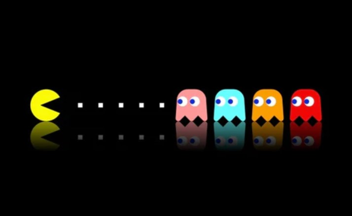

Lab 4 - Pseudocoding and Problem Solving
Challenge
Create pseudocode for a simple computer game. Put it in a javascript file as comments. Put the Java into this page.
Problems
We sometimes had trouble deciding order and sub-steps. We weren't sure which tasks should go before others.
Reflection
This lab went well. We discussed each step and where to put them. It was interesting to break down a process into many steps and sub-steps.
Results
// pseudocode for Pac-Man
// Print an empty maze
// Set lives and scores to 0
// Print this text on the screen
// Loop that runs while he is still alive
// Print the score and lives as text at the top
// Print the current screen
// Create the Pac-Man character that will be moved by the user
// Take user input to move Pac-Man using coordinates
// Create the ghosts that will move automatically
// Algorithm to move them randomly (random coordinates)
// When Pac-Man touches them, he loses a life
// Print the dots in all paths that will be eaten by Pac-Man
// They disappear as Pac-Man passes over them
// Increase score
// Print the bigger powerup dots
// They disappear as Pac-Man passes over them
// He does not lose a life the next time he touches a ghost
// Print game over message